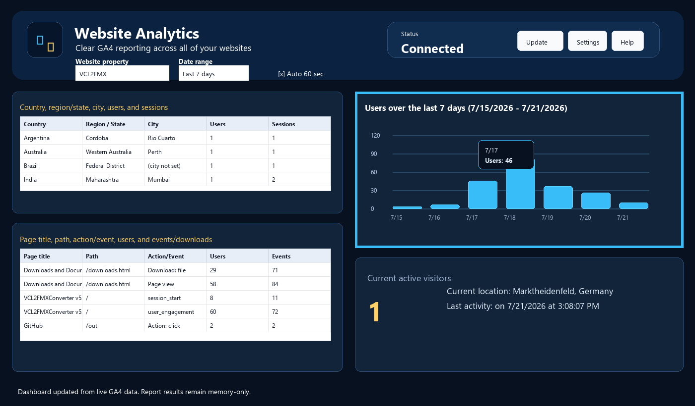

Users Graph

What the graph shows
- The upper-right graph shows users over the selected date range.
- The chart uses bars, whole-number scale labels, zero at the bottom, and month/day labels under the bars.
- Hovering over a bar shows a compact tooltip with the date and user count.
Why only users
Users over time is the cleanest high-level pattern for this dashboard. It answers whether the site is quiet, normal, or unusually active without cluttering the display.